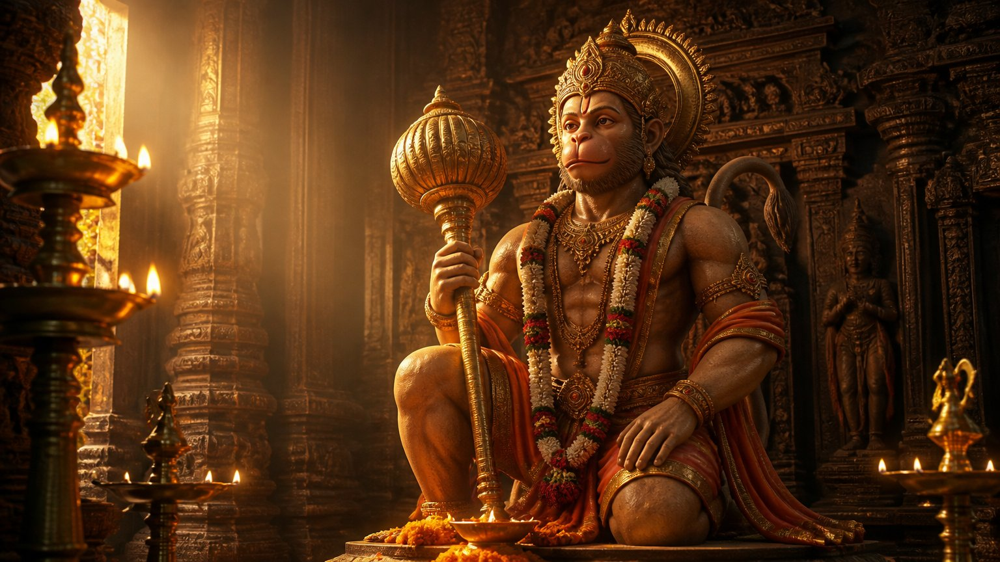

हम सब किसी न किसी की प्रतीक्षा में हैं। कोई महापुरुष आएगा, कोई कल्कि अवतार प्रकट होगा, और सब कुछ बदल देगा। पर क्या भगवद्गीता सच में यही कहती है?
इस प्रवचन में गुरुजी गीता के चौथे अध्याय के तीन श्लोकों के सहारे अवतार (ईश्वर का अवतरण, divine incarnation) की वास्तविक परिभाषा समझाते हैं, और एक ऐसा प्रश्न सामने रखते हैं जो हमारी पूरी सोच को उलट देता है।
महापुरुषों का चरित्र पढ़कर हमें क्या मिला?
स्वामी विवेकानंद महान थे, छत्रपति शिवाजी महाराज महान थे, एकनाथ महाराज महान थे। नाड़ी ग्रंथ में श्रीपाद श्रीवल्लभ को अवतार बताया गया था। पर वे तो चले गए। आपको क्या लाभ?
गुरुजी का प्रश्न सीधा है: क्या आप उनमें से किसी एक जैसे बन सकते हो? यदि उनका एक अंश भी आपके भीतर आया, तभी उनके अस्तित्व का आपको कोई लाभ है।
हम शिवाजी महाराज और चंद्रगुप्त का चरित्र पढ़ते हैं, पर अपने ही भाई से संपत्ति के मुकदमे में खड़े होने से डरते हैं। दो माला की साधना भी नहीं कर पाते। तो महापुरुषों का चरित्र पढ़ने का अर्थ क्या है? आचार्य जी कहते हैं कि उनका एक अंश भी आपके अंदर आया, तभी उनके अस्तित्व का कुछ लाभ है।
आपने जिन महापुरुषों के बारे में पढ़ा है, उनका कौन सा गुण आज सच में आपके जीवन में दिखाई देता है?
प्रतीक्षा की आदत
गुरुजी बताते हैं कि जैसे श्रीपाद श्रीवल्लभ के नाड़ी ग्रंथ में अवतार कार्य का उल्लेख था, वैसे ही उनके अपने नाड़ी शास्त्र में भी आता है कि वे कोई बड़ा कार्य करेंगे, देश बदल देंगे।
पर असली समस्या कहीं और है। जब भी हम युग परिवर्तन (युग का बदलना, a change of era) की बात करते हैं, हम किसी कल्कि के आने की राह देखने लगते हैं। हम स्वयं कुछ नहीं करेंगे; कोई तो आएगा, तब हमारा भला होगा।
गुरुजी स्पष्ट कहते हैं: ऐसा भगवद्गीता में कभी नहीं लिखा।
पहला श्लोक: आपका भी जन्म इसी समय हुआ है
यदा यदा हि धर्मस्य ग्लानिर्भवति भारत।
अभ्युत्थानमधर्मस्य तदात्मानं सृजाम्यहम्॥
"हे भारत, जब-जब धर्म की हानि होती है और अधर्म बढ़ता है, तब-तब मैं अपने रूप को रचता हूं।"
(श्रीमद्भगवद्गीता ४.७)
गुरुजी पूछते हैं: क्या आज धर्म की हानि हुई है? क्या नकारात्मकता बढ़ी है? यह केवल उन्हें दिखता है, या आपको भी? आपको भी दिखता है।
तो ऐसे ही समय में आपका भी जन्म हुआ है। आपका भी एक रूप रचा गया है। आप भी संसार के सामने प्रकट हुए हो। यानी अवतार की पहली शर्त आप पर भी लागू होती है।
जब सरस्वती दीक्षा के लिए आए बच्चों के माता-पिता ने पूछा, "गुरुजी, क्या आप अवतार हैं?", तो उन्होंने उत्तर दिया कि केवल वे ही क्यों, पूछने वाला भी तो अवतार है; हम सब अवतार हैं।
अंतर केवल इतना है कि गुरुजी जान चुके हैं कि वे कौन हैं। जो परमात्मा को, स्वयं को पहचान लेता है, वही अवतार है। आपके भीतर भी वही ब्रह्म (परम सत्य, the Absolute) है। बात केवल उसे पहचानने की है।
दूसरा श्लोक: फर्क कर्म का है
परित्राणाय साधूनां विनाशाय च दुष्कृताम्।
धर्मसंस्थापनार्थाय सम्भवामि युगे युगे॥
"सज्जनों की रक्षा, पाप करने वालों का विनाश, और धर्म की स्थापना के लिए मैं युग-युग में प्रकट होता हूं।"
(श्रीमद्भगवद्गीता ४.८)
जन्म तो सबका हुआ है। पर आप बनते हो चिकित्सक, अभियंता, वास्तुकार; और अवतार बनता है गुरु कार्य, देश कार्य करने के लिए। यही अवतार को सामान्य व्यक्ति से अलग करता है।
अवतार साम, दाम, दंड, हर तरीके से यह काम करने को तत्पर रहता है, चाहे चक्र चलाना पड़े या बाण। और धर्मसंस्थापना का संबंध राजनीति से आता ही आता है, क्योंकि पूरी व्यवस्था बदलनी होती है। इसमें क्षत्रिय और ब्राह्मण, दोनों का कार्य आता है।
तो पहली शर्त में आप पास हुए, दूसरी में, यानी यह कार्य न करने के कारण, आप चूक गए।
क्या आपका जीवन केवल अपने परिवार और करियर तक सीमित है, या उसमें किसी बड़े कार्य के लिए भी जगह है?
तीसरा श्लोक: जो हमने कभी पढ़ा ही नहीं
तो क्या आपका मोक्ष नहीं होगा? गीता ऐसा नहीं कहती। गुरुजी कहते हैं कि अगला श्लोक, चौथा अध्याय, नौवां श्लोक, हमने कभी पढ़ा ही नहीं। पढ़ लिया होता, तो किसी कल्कि की प्रतीक्षा में न बैठे रहते।
जन्म कर्म च मे दिव्यमेवं यो वेत्ति तत्त्वतः।
त्यक्त्वा देहं पुनर्जन्म नैति मामेति सोऽर्जुन॥
"हे अर्जुन, जो मेरे दिव्य जन्म और कर्म को तत्त्व से जान लेता है, वह शरीर त्यागकर फिर जन्म नहीं लेता, मुझे ही प्राप्त होता है।"
(श्रीमद्भगवद्गीता ४.९)
यहां पहला संदेश है: जिस गुरु या नेता का आप अनुसरण कर रहे हो, पहले जांचो कि उसका जन्म और कर्म दिव्य (divine) है या नहीं। दिव्य की दो कसौटियां हैं:
- १निर्मल: जिसमें मल नहीं। चिकित्सक है, पर बिना बताए किसी का अंग नहीं निकालता। राजनेता है, पर भ्रष्टाचार नहीं करता। गुरु है, पर कोई गड़बड़ नहीं करता। मन और व्यवहार दोनों निर्मल।
- २अलौकिक: जो लौकिक, यानी सांसारिक नहीं है। उसका कुछ तो दिव्य, चमत्कारी कार्य, वैसी वाणी, वैसे वचन होने चाहिए।
गुरुजी याद दिलाते हैं कि केवल अतिमानवी शक्ति पर्याप्त नहीं; हमें कोई सुपरमैन नहीं, परम दिव्य शक्ति वाला चाहिए।
मानना और जानना एक नहीं
श्लोक कहता है "तत्त्व से जान लेता है", मान लेता है नहीं।
मानना यानी किसी ने कहा कि यह भगवान है, तो आपने पूजा शुरू कर दी। कल कोई और कहेगा, तो उसकी भी करोगे। जानना यानी शत-प्रतिशत निश्चय कि भगवान क्या है।
तत्त्व से जानना (knowing the essence) का अर्थ है सिद्धांत और अनुभव, दोनों से जानना। गुरुजी का उदाहरण सुंदर है: शक्कर पर दस हजार पृष्ठ लिख दो, फिर भी समझ नहीं आएगा कि वह मीठी है या तीखी। पर जरा सा चख लो, तो तुरंत समझ जाओगे।
मुक्ति की चार सीढ़ियां
और यह अनुभव केवल घर बैठे नहीं आता। गुरुजी शास्त्रों में बताई गई चार प्रकार की मुक्ति समझाते हैं:
- १सालोक्य: आध्यात्मिक लोगों के बीच रहना। गुरु के पास आना, थोड़ा अध्ययन करना। जैसे किसी के प्रशंसक बनकर चुपचाप अनुसरण करना।
- २सामीप्य: गुरु के समीप जाना। उनके जीवन को निकट से देखना, कुछ समय उनके साथ रहना। यहीं से तत्त्व जानना शुरू होता है।
- ३सारूप्य: उनके जैसा रूप। शरीर का नहीं, स्वरूप का। आपके गुण, वाणी और कर्म उनके जैसे होने लगते हैं।
- ४सायुज्य: युज यानी जुड़ना, एक हो जाना। उनके जैसा नहीं, आप वही बन जाते हो।
यही गुरु को तत्त्व से जानना है। और जो यहां तक पहुंचता है, उसका मोक्ष निश्चित है। यदि आप किसी अवतार का अनुसरण कर रहे हो, तो आप भी उस अवतार का ही अंग बनने के योग्य हो जाते हो।
आप आज किस सीढ़ी पर खड़े हो: केवल प्रशंसक, या किसी के सच में समीप?
अवतार कभी अकेला नहीं लड़ता
सीता माता को रावण ले गया। यह श्रीराम की निजी समस्या कही जा सकती थी। फिर हनुमानजी क्यों लड़े? पूरी वानर सेना क्यों लड़ी?
छत्रपति शिवाजी महाराज का लक्ष्य था स्वराज्य, मुगलों से मुक्त भारत। फिर मावळे क्यों लड़े? बाजीप्रभु क्यों लड़े?
उत्तर स्पष्ट है: अवतार भले उत्पन्न हो जाए, वह अकेला कार्य नहीं करता। वह एक विशाल दल के साथ काम करता है। और वह दल होते हैं साधक, जो सामीप्य में आते हैं और धीरे-धीरे स्वयं उसी अवतार अवस्था तक पहुंचते हैं।
हनुमानजी का उत्तर: तीन स्तर, एक सत्य
युद्ध के लिए जाते समय श्रीराम ने हनुमानजी से पूछा, "तुम्हारा और मेरा संबंध क्या है?" हनुमानजी, जो स्वयं शिव के अवतार हैं, बिना सोचे उत्तर देते हैं, और उस उत्तर में दर्शन के तीन स्तर खुलते हैं।
द्वैत (duality): शरीर बोध से देखूं, तो आप और मैं अलग। आप स्वामी, मैं दास। पर इसका अर्थ जीवन भर की गुलामी नहीं। हनुमानजी अपनी पहचान को लेकर स्पष्ट थे; गुरुजी कहते हैं कि यही स्वाधिष्ठान चक्र है, अपनी पहचान को भली-भांति जानना।
विशिष्टाद्वैत (qualified non-duality): मन और बुद्धि के स्तर पर, आप पूर्ण हो, मैं उसका अंश। आप समुद्र हो, तो मैं एक बूंद। आपके भीतर पूरा समुद्री जीवन है, आप पर जहाज चलते हैं; मुझमें कुछ नहीं। पर यदि एक-एक बूंद निकल जाए, तो समुद्र ही न रहे। जैसे राजा, राजा होता है अपनी सेना, प्रजा और मंत्रियों के कारण।
गुरुजी हंसते हुए जोड़ते हैं कि यह ज्ञान एक श्रमिक संघ के नेता को भी होता है, जो मालिक से कहता है, "आप स्वामी, मैं दास, पर ज्यादा नाटक मत करना, मैं हड़ताल कर सकता हूं।" पर हनुमानजी कोई वानर सेना की हड़ताल करवाने वाले नेता नहीं थे।
अद्वैत (non-duality): आत्म तत्त्व के स्तर पर, दो सौ प्रतिशत निश्चय कि हम दोनों एक ही हैं। आप विष्णु के अवतार, मैं शिव का अवतार। मैंने आपको पहचान लिया है।
यही सायुज्य है। यही वह अवस्था है जिसकी बात वे तीन श्लोक करते हैं।
कल्कि बाहर नहीं, भीतर जागेगा
कोई व्यक्ति होगा जो अवतार कार्य करने आया होगा। उसे राजनीति, धर्मसंस्थापना, सब करने दो। आपका काम है उसे पहचानना और उससे जुड़ना।
स्वयं से पूछिए: क्या मैं सज्जनों की सहायता, दुर्जनों की पराजय और धर्म की स्थापना में कोई योगदान दे सकता हूं? यदि स्वयं नहीं कर सकता, तो क्या कम से कम ऐसे व्यक्ति के साथ जुड़ता हूं?
जब व्यक्ति ऐसे देश कार्य, गुरु कार्य में जुड़ जाता है और अपने गुरु को पहचान लेता है, उसी क्षण वह भी वही कल्कि अवतार बन जाता है। गुरुजी कहते हैं, यही वास्तविक परिभाषा है। एक पूरी सेना मिलकर यह कार्य करती है, और मोक्ष आपको मिलता है।
अवतार तभी आता है जब सारी प्रकृति के लोग कहते हैं कि हमें ऐसा कोई नेता चाहिए। जैसे गुरु तभी आता है जब शिष्य प्रश्न लेकर खड़ा होता है। यदि हम कहते रहें कि जैसा चल रहा है चलने दो, भ्रष्टाचार चल रहा है चलने दो, तो कोई अवतरण नहीं होगा। आचार्य जी कहते हैं कि जब तक हमारे अंदर का कल्कि जागृत नहीं होगा, बाहर का कोई कल्कि आने वाला नहीं है।
हनुमान बनो, मावळे बनो
हनुमानजी की तरह सेवक बनना भी चलेगा, वानर की तरह काम करना भी चलेगा। फिर भी आप मुक्ति तक पहुंच सकते हो, यदि आप उस व्यक्ति के साथ एकरूप हो जाओ, जैसे हनुमानजी ने श्रीराम को पहचाना।
शिवाजी महाराज के मावळों ने कभी नहीं कहा, "हमने भी लड़ाई लड़ी, प्राण दिए, तो हम भी सिंहासन पर बैठेंगे।" उनका भाव था: "वह आपका काम है, मेरा काम लड़ना था, मैंने लड़ लिया।"
गुरुजी के अनुसार रास्ते दो हैं: या तो स्वयं शक्तिपात दीक्षा देने वाले शक्तिशाली गुरु बन जाओ, या ऐसे कार्य में जुट जाओ। मोक्ष दोनों से होगा।
यदि आज आपके जीवन में ऐसा कोई गुरु या कार्य हो, तो क्या आप उसे पहचान पाओगे?

मुख्य बातें
- अवतार की परिभाषा गीता ४.७ से ४.९ में है; उसमें किसी की प्रतीक्षा करने की बात नहीं लिखी।
- धर्म की हानि के समय आपका भी जन्म हुआ है, इसलिए अवतार की पहली शर्त आप पर भी लागू होती है।
- अवतार और सामान्य व्यक्ति में फर्क कर्म का है: सज्जनों की रक्षा, दुष्टों का विनाश और धर्म की स्थापना।
- जिसका अनुसरण करो, पहले जांचो कि उसका जन्म और कर्म निर्मल और अलौकिक है या नहीं।
- मानना और जानना अलग हैं; तत्त्व से जानना यानी सिद्धांत और अनुभव, दोनों से जानना।
- मुक्ति की चार सीढ़ियां: सालोक्य, सामीप्य, सारूप्य और सायुज्य।
- अवतार अकेला नहीं लड़ता; श्रीराम के साथ हनुमान और वानर सेना थी, शिवाजी महाराज के साथ मावळे।
- हनुमानजी का उत्तर द्वैत, विशिष्टाद्वैत और अद्वैत, तीनों स्तरों को समझाता है।
- जब आप ऐसे कार्य से जुड़कर गुरु को पहचान लेते हो, उसी क्षण आप भी कल्कि बन जाते हो।
- भीतर का कल्कि जागे बिना बाहर का कोई कल्कि नहीं आएगा।